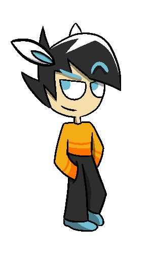

Sparky
Foodie. Crackshot. No, there's nothing hiding under the scarf (for real).


Icicle
If you don't know what he is talking about, then you're probably normal.
Foodie. Crackshot. No, there's nothing hiding under the scarf (for real).
If you don't know what he is talking about, then you're probably normal.